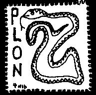

Thursday, January the 6th, 2005
back to: title, date or indexes

This is number one in our new series showing pit vipers on postage stamps. Hooting Yard wishes to thank the Western Montana Agkistrodon contortrix Philatelic Society for a generous grant enabling us to carry out this important work and keep Mrs Gubbins supplied with tea bags.